Du sanskrit Ānanda (la joie profonde, la béatitude) et Saṅgam (la confluence, la rencontre), notre nom incarne le point de rencontre où les sons et les âmes s’unissent, comme des rivières qui se rejoignent, pour créer un espace de bonheur et de bienveillance partagés.
Nous sommes un nouveau collectif musical de Québec et nous vous invitons à découvrir le kirtan : un chant collectif de mantras issus principalement des traditions hindoue et bouddhiste. Au fil des mélodies, nos voix s’unissent pour nous offrir un moment de communion par le son et révéler la paix du cœur.
Le kirtan est semblable à un feu que l’on allume ensemble. Portés par les chants et la musique de notre collectif, nous vous offrons un espace bienveillant, accueillant et sans jugement pour vous libérer de ce qui vous pèse, accueillir l’instant présent et repartir plus légers, libres et alignés avec votre essence véritable. Ensemble, nous élèverons nos voix et nos cœurs pour rejoindre une vibration harmonieuse qui transcende le temps et l’espace.
Tout le monde est bienvenu. Invitez vos amis et venez comme vous êtes, aucune expérience en chant n’est nécessaire.
Notre groupe est aussi ouvert à accueillir d’autres musiciens ou chanteurs/
Au grand plaisir d’être ensemble !
Événements à venir : visitez notre page Facebook Pour plus d’informations, contactez : raffael.jomphe@gmail.com
Exemples de chants
Voici quelques exemples tirés de YouTube pour vous donner un aperçu de notre univers musical et des mantras que nous chantons (liste non exhaustive). Nous nous inspirons de certaines de ces pièces en les interprétant à notre manière avec nos instruments, et notre répertoire s’enrichit aussi de compositions originales créées par nos musiciens. Vos suggestions sont toujours les bienvenues !
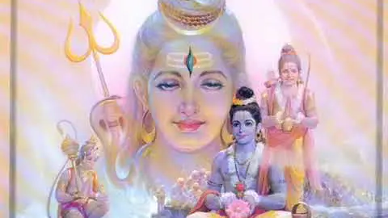
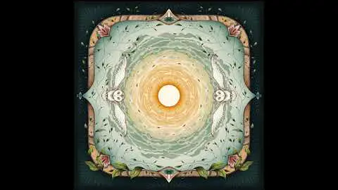
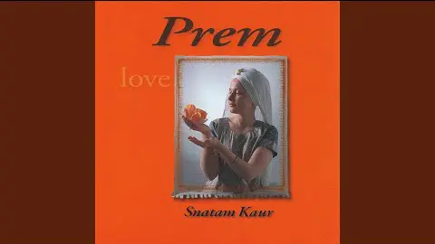
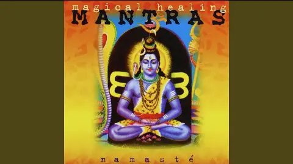
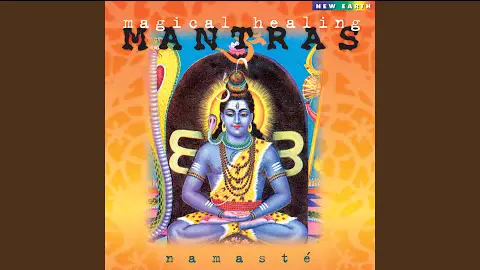
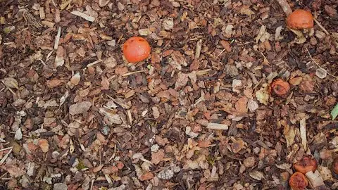
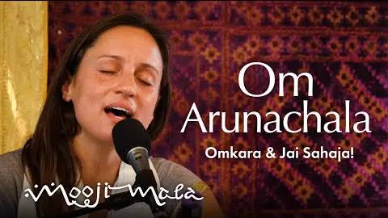
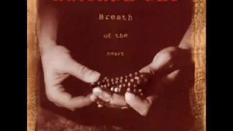

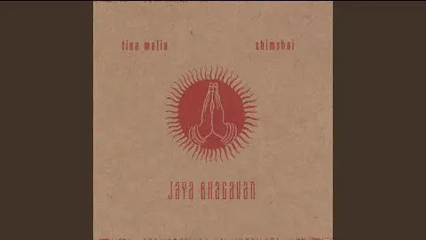

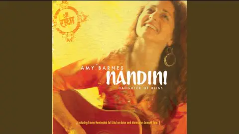
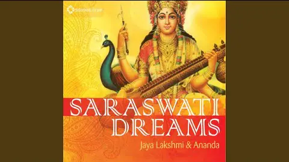
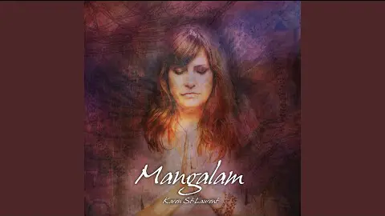
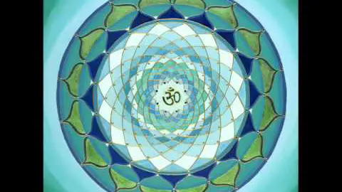
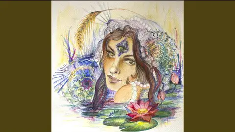
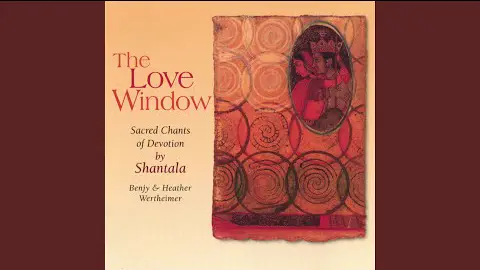
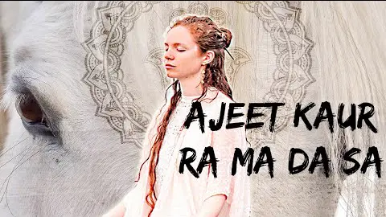
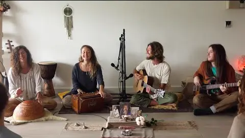
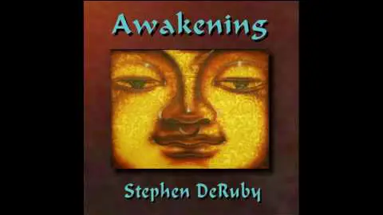
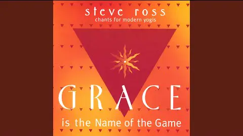